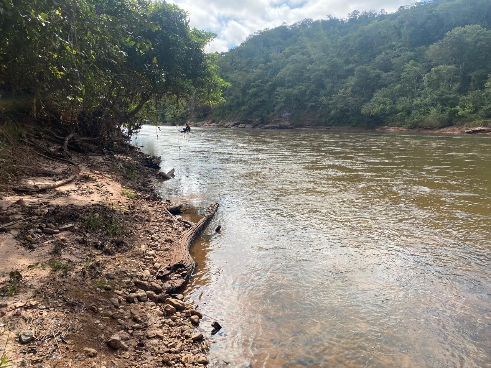

Our Story
A working farm in the heart of Mato Grosso
Araujo Farms is the home of Fazenda Nova Campinas, a 1,340-hectare property in the municipality of Tesouro, in Brazil's Mato Grosso state. It is cattle country: rolling pasture, fertile clay soils, and long frontage on the clear-running Rio Garças.
The farm balances production and preservation. Alongside its pasture and cultivated ground, more than a thousand hectares of native Cerrado remain standing — a legally protected reserve that keeps the springs flowing, the soil in place, and the wildlife at home.
Everything here is built for the long term: three-phase power, an artesian well, paved-highway access, and structures ready for a family and a working operation.